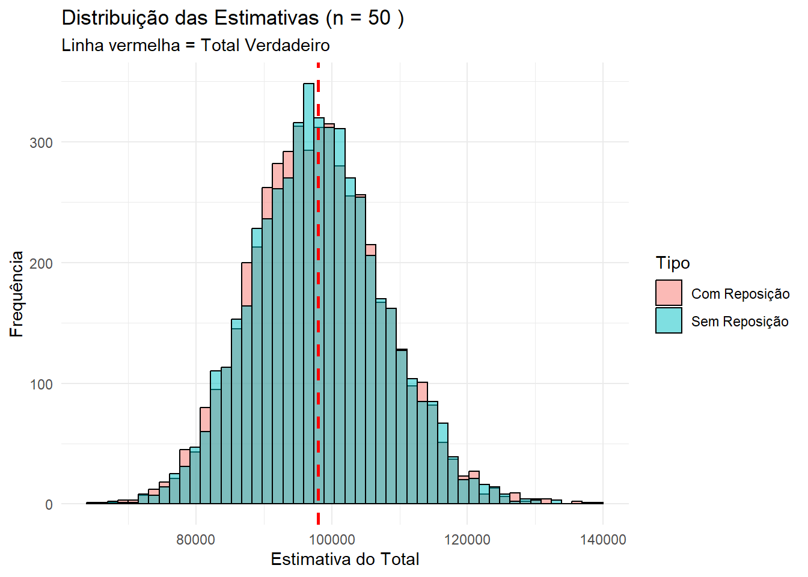

# ConfiguraçõesR <-5000# Número de réplicastamanhos_n <-c(50, 200, 1000) # Variando n (Passo 5: pequeno, médio, grande)
5 Loop principal da simulação
Repete todo o experimento para diferentes tamanhos de amostra.
Mostra convergência do estimador
Evidencia redução de variância
Mostrar código
# Loop para rodar a simulação com diferentes tamanhos de amostrafor (n in tamanhos_n) {cat("========================================\n")cat("ANALISANDO PARA TAMANHO DE AMOSTRA n =", n, "\n")cat("========================================\n")# Rodar simulação resultados <-realizar_simulacao(n, R, y_pop, N)# Calcular métricas AAS Com Reposição metricas_c <-calcular_metricas(resultados$com_reposicao, tau_verdadeiro)# Calcular métricas AAS Sem Reposição metricas_s <-calcular_metricas(resultados$sem_reposicao, tau_verdadeiro)# Exibir Tabela Comparativa tabela <-rbind(AAS_Com_Rep = metricas_c, AAS_Sem_Rep = metricas_s)print(round(tabela, 4))# --- Gráficos (Histogramas) ---# Criando data frame para o ggplot df_plot <-data.frame(Estimativa =c(resultados$com_reposicao, resultados$sem_reposicao),Tipo =c(rep("Com Reposição", R), rep("Sem Reposição", R)) ) p <-ggplot(df_plot, aes(x = Estimativa, fill = Tipo)) +geom_histogram(alpha =0.5, position ="identity", bins =50, color="black") +geom_vline(xintercept = tau_verdadeiro, linetype="dashed", color ="red", linewidth=1) +labs(title =paste("Distribuição das Estimativas (n =", n, ")"),subtitle ="Linha vermelha = Total Verdadeiro",y ="Frequência", x ="Estimativa do Total") +theme_minimal()print(p)cat("\n")}
========================================
ANALISANDO PARA TAMANHO DE AMOSTRA n = 50
========================================
Vies Vies_Rel_Perc Variancia DP EQM
AAS_Com_Rep -26.5906 -0.0271 94654707 9729.065 94655414
AAS_Sem_Rep 201.8477 0.2060 91432961 9562.058 91473704

========================================
ANALISANDO PARA TAMANHO DE AMOSTRA n = 200
========================================
Vies Vies_Rel_Perc Variancia DP EQM
AAS_Com_Rep -79.5631 -0.0812 23933072 4892.144 23939402
AAS_Sem_Rep 14.8169 0.0151 22814948 4776.499 22815167
========================================
ANALISANDO PARA TAMANHO DE AMOSTRA n = 1000
========================================
Vies Vies_Rel_Perc Variancia DP EQM
AAS_Com_Rep 22.5556 0.0230 4677684 2162.796 4678193
AAS_Sem_Rep 2.8249 0.0029 3854239 1963.222 3854247